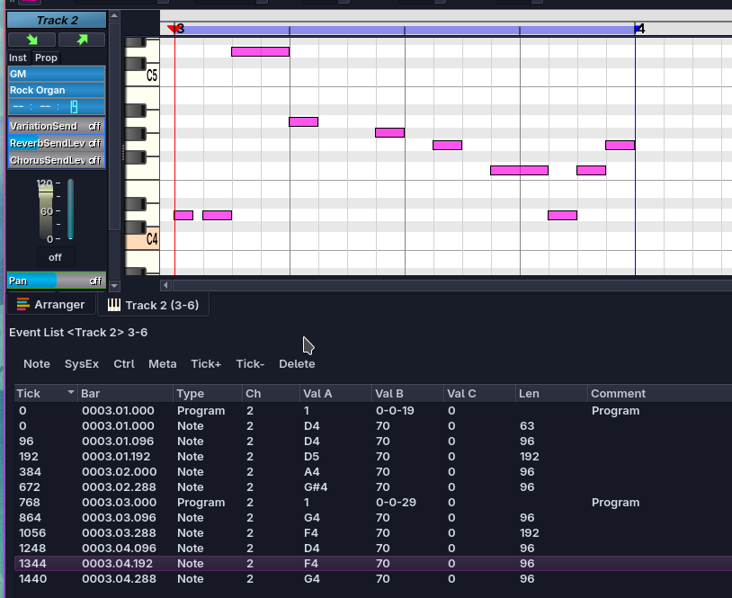

Event List
Puedes abrir la Lista de Eventos desde la toolbar (Editar > Event List...) o presionando CTRL+L teniendo seleccionada una pista o una parte del tipo adecuado (pistas Midi o de Percusión).
Esto abrirá una ventana que contiene una lista de eventos de tipo Note, SysEx, Meta y Control, en la parte seleccionada, o en toda la pista si no hay ninguna parte seleccionada.

En esta captura se observa la lista de eventos abierta para la pista 2, donde se encuentran 12 eventos. 10 de ellos son de tipo Note, y 2 son de tipo Ctrl (Program Change).
La lista de eventos contiene información como:
- El tiempo en el que el evento ocurre (Tick, Bar)
- El Tipo (Type) del evento, que puede ser Note, SysEx, Ctrl o Meta
- El Canal (Channel) en el que el evento ocurre, en este caso 2, ya que la pista Midi esta en el canal 2.
- Tres campos de Valor (Value) que varían según el tipo de evento, para un evento de tipo Note, estos corresponden a Note (D4), NoteOn Velocity y NoteOff Velocity.
Crear un evento
Note
Puedes crear un evento de tipo Note presionando el botón
Note. Allí puedes configurar su tiempo, duración, tono y
velocidad. Sin embargo, dibujar eventos en el piano roll suele ser
más sencillo.
SysEx
Puedes crear un evento de tipo SysEx presionando el botón
SysEx. Los eventos SysEx son menos comunes que los demás;
puedes aprender más sobre SysEx en línea.
Ctrl
Puedes crear un evento de tipo Ctrl presionando el botón
Ctrl. Con los eventos Ctrl puedes ajustar cosas como el
Program (Instrumento), Pan, Reverb, Chorus, o incluso eventos de
Pitch Wheel. En el ejemplo anterior se utilizaron dos eventos Ctrl
para cambiar el instrumento del canal actual dos veces.
Meta
Puedes crear un evento de tipo Meta presionando el botón
Meta. Los eventos Meta pueden contener cosas como Letras de
canciones, Marcadores, entre otros.
Mover, eliminar o editar eventos
Mediante los botones Tick+ y Tick-, puedes aumentar o
disminuir la posición en ticks del evento o eventos seleccionados en
uno.
Con el botón Delete puedes eliminar los eventos
seleccionados.
Para editar un evento existente, puedes hacer doble clic sobre él.